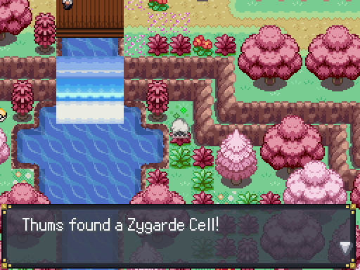
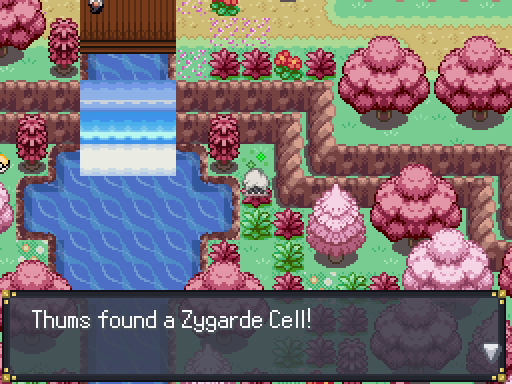
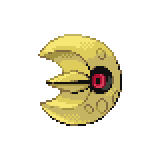
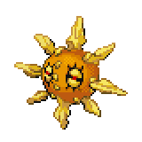
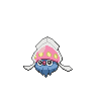
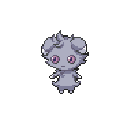

Route 2
Route 2

| Item | Location |
Carbos |
Southwest of the train station |
Green Shard |
Clearing by the Meganium |
Red Shard |
Upper branch before going across the first bridge |
Blue Shard |
On the path to the first bridge |
Gourmet Treat |
Above the Kecleon shop |
Magical Seed |
Southeast of the Kecleon shop |
Blue Shard |
On the path after Prima Donna Jiara |
Rose Incense |
In the bottom left of the northwest patch of grass |
Friend Ball |
In the top right of the northwest patch of grass |
When you enter Route 2, you'll be bumped into by a black-haired girl. She'll run away, and you realized she stole some money away from you. There's a few hidden items in Route 2, the most useful being a Carbos and Magical Seed. Follow the girl to the right and use Rock Smash, and she'll continue running away. There's a few things that we to note that we can do here. There is a chance of a Pokemon battle when you use Rock Smash, and there are also headbuttable trees
 scattered throughout the map. The trees are separated into two variants. High trees have a higher chance of spawning a Pokemon, but have less rare Pokemon as a result. Low trees have a lower chance of spawning a Pokemon, but have rarer Pokemon. As for Pokemon that can learn Headbutt, Seel from the Chrisola Casino is one of the easiest option. You can also catch Drowzee at nights on this route. You can also fish here if you picked up the Old Rod, but you'll only find Finneon here.
scattered throughout the map. The trees are separated into two variants. High trees have a higher chance of spawning a Pokemon, but have less rare Pokemon as a result. Low trees have a lower chance of spawning a Pokemon, but have rarer Pokemon. As for Pokemon that can learn Headbutt, Seel from the Chrisola Casino is one of the easiest option. You can also catch Drowzee at nights on this route. You can also fish here if you picked up the Old Rod, but you'll only find Finneon here.
Head back down to where the girl ran away, and you'll see a tree run away across the bridge, and on the bridge you'll battle Tourist Hinata.
 Once you beat him, go ahead and cross the bridge.
Once you beat him, go ahead and cross the bridge.

In this area, during the day you can find Aipom standing around the tree. If you do want to use one, catch an extra one as it will be used to trade with a Pancham in the next city. You can also find a Kecleon Shop
 here, who will sell you some items if you need to restock on a few basic needs. Above the Kecleon Shop you can find a Zygarde Cell. From there, head to the right to battle Fragrant Lady Ruddie,
here, who will sell you some items if you need to restock on a few basic needs. Above the Kecleon Shop you can find a Zygarde Cell. From there, head to the right to battle Fragrant Lady Ruddie, and then you can use the Healing Star to heal if needed. Roaming near the Healing Star is Youngster Kaius
and then you can use the Healing Star to heal if needed. Roaming near the Healing Star is Youngster Kaius and below him on the bridge is Fisherman Connald.
and below him on the bridge is Fisherman Connald.
That's all to do on the right side, so head on over to the left side of the Kecleon Shop. Before you cross the bridge, you'll battle Prima Donna Jiara.
 Keep heading left and up the stairs. Here, you can also find a painter
Keep heading left and up the stairs. Here, you can also find a painter who is looking for his favorite three Pokemon. If you do have a Cherrim in your party, showing it to him will give you a Miracle Seed. We don't have access to Magcargo yet, so we'll come back later.
who is looking for his favorite three Pokemon. If you do have a Cherrim in your party, showing it to him will give you a Miracle Seed. We don't have access to Magcargo yet, so we'll come back later.

Head back down and interact with the totally normal tree. Nim will eventually give up and teleport away. Head back over to the right side and heal up for an upcoming battle. At the entrace of the cave, Nim will let you know its just a prank and that your money never left your possession. Additionally, she'll challenge you to a battle and teleports you to a different dimension to start the battle.

Apprentice Nim
|

Lunatone, Level 18 |
Rock | Rock Slide |

Solrock, Level 18 |
Rock | Rock Slide |
|---|---|---|---|---|---|
| Confusion | Psywave | ||||
| Psychic | Ancient Power | Psychic | Fire Spin | ||
| Cosmic Power | Harden | ||||
|

Inkay, Level 12 |
Psychic | Feint Attack |

Espurr, Level 12 |
Psychic | Disarming Voice |
| Psywave | Psybeam | ||||
| Dark | Hypnosis | Reflect | |||
| Swagger | Light Screen | ||||
Reward:  300 300
|
|||||
This is another one of the battles where the field is not in your favor. In the Psychic Terrain, Dark-type moves are severely weakened, so the common moves of Bite will not do much. Bug-type Pokemon will also be hurt by the fact that Solrock and Lunatone both have Rock Slide, which will deal heavy damage. If you have a Water-type and a non-Poison Grass-type, they can make short work of Solrock and Lunatone. Once those two are out of the way, Inkay and Espurr are not too threatening. Espurr will often try to set up screens, so get rid of it before it can set up. Inkay can status your Pokemon, but otherwise its moves are not very strong. You can use Bug-type Pokemon to great effect once the two Rock Sliders are down.
After the battle, Nim will give you a Twisted Spoon, which can boost your Psychic-type moves. She'll teleport you back to the cave entrance, and lets you know that she'll be cheering you on. Heal up, then head on into Amethyst Cave.
<< After the First Badge Amethyst Cave >>
×
Fisherman Connald

Magikarp, Level 13 |
Water | Splash |
|---|---|---|
| --- | ||
| --- | ||
| --- | ||
|
Magikarp, Level 13 |
Water | Splash |
| --- | ||
| --- | ||
| --- | ||
|
Magikarp, Level 14 |
Water | Splash |
| --- | ||
| --- | ||
| --- | ||
|
Magikarp, Level 15 |
Water | Splash |
| Tackle | ||
| --- | ||
| --- | ||
|
Magikarp, Level 15 |
Water | Splash |
| Tackle | ||
| --- | ||
| --- | ||
|
Magikarp, Level 16 |
Water | Splash |
| Tackle | ||
| --- | ||
| --- | ||
|
Reward: 96
|
||
×

Route 2